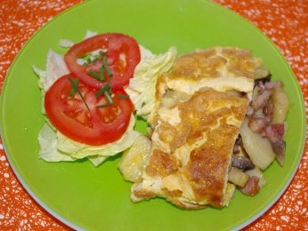

Chausson lardons pommes de terre mozzarella
Ingredients
×
- 1 oignon
- 2 pommes de terre
- 1 pâte brisée
- 125 g de lardons
- 2 boules de mozzarella
- 150 g de Philadelphia
- paprika
- herbes de Provence
- ciboulette
- 1 échalote

Préparation
Étape 1
Rissoler 1 oignon émincé. Quand il est translucide, ajouter 2 pommes de terre pelées et coupées en tranches épaisses, couvrir d’eau et cuire à feu moyen jusqu’à évaporation. Étaler sur la moitié de 1 pâte brisée.
Étape 2
Rissoler 125 g de lardons à feu vif, les égoutter sur du papier absorbant et les répartir dessus. Ajouter 2 boules de mozzarella en dés.
Étape 3
Mélanger 2-3 cas de 150 g de Philadelphia avec sel, poivre, paprika, herbes de Provence, ciboulette et 1 échalote hachée. Disposer par touches sur la garniture.
Étape 4
Fermer en chausson et cuire environ 20min à 180ºC.